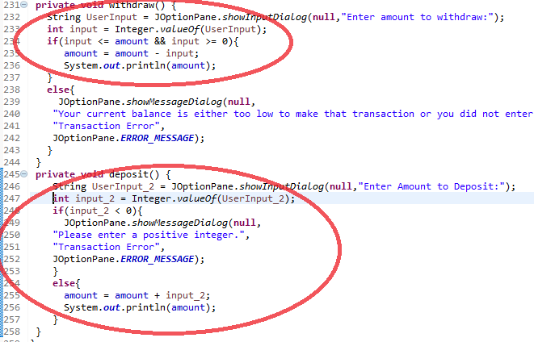
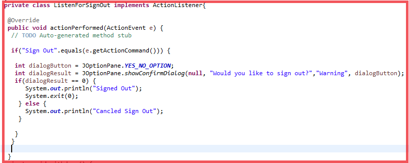

In the video I showed my partner and I’s project, ATM Project, and showed what the buttons do, such as the “Check Balance” button, which would show the user’s balance as in money in a dialog box, the “Withdraw” button, which would show a dialog box to ask how much you would want to take out of your current balance, and lastly the “Deposit” button, to add more money into your current balance. After I showed what the buttons do, I then showed the current balance to show how much was in the bank and I showed if the withdraw would function the way it should be, so I would withdraw over the limit of the current balance, and it would give a warning dialog box saying, “Your current balance is either too low to make that transaction or you did not enter a positive integer.” I then tried to deposit a negative integer to see if the deposit button would function properly, which then popped up another warning dialog box saying, “Please enter a positive integer.” After that, I showed the menu bar with two drop down menus with two buttons in each, the “About” showing the user’s identification, the “Sign Out” which would sign the user out and close the program, the “Info” which would give information about our project, and lastly “Help” which would help users who is confused about what to do. After all of it, I lastly showed the sign out button on the menu bar, showing it worked properly, it would ask a warning dialog box and ask if they want to sign out with a yes or no question, and if the user presses no or the x on the top right corner, it would cancel the sign out, and when the user presses yes, it would close the program completely.
 So when we first started off this project, my partner and I started doing the basics, which was making the window and making buttons for our ATM Project. After we created the window and the three buttons, “Check Balance”, “Withdraw”, and “Deposit” we then started to make a menu bar for our project. A problem me and my partner had was making a dialog box for a sign out button on the menu bar, which would be a yes or no option to close the program. The “Yes” button in the dialog box would work, but every time we would press no or the x on the upper right corner, it would close, which is what we both didn’t want. We then fixed our problem by making a different variable, “dialogResult” instead of “dialogButton” and we would make dialogResult equal to 0 and we figured our problem out. Me and my partner both had jobs to do, I would create the menu bar button action listeners for dialog boxes and my partner would do the math functions for our ATM Project to make it a proper ATM.